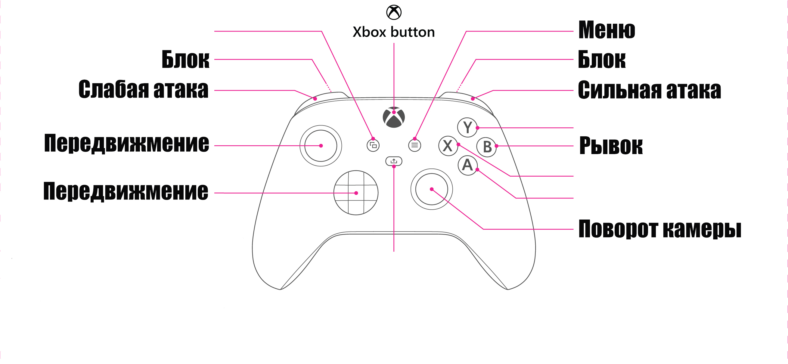

Лидер проекта:
- Ушаков М. В.
Куратор проекта:
- Соболь Т. С.
Команда проекта:
- Ануфриев П.Д.; Коваленко М.С.; Коршунов Д.И.; Крамской И.С.; Лазарева А.А.; Магомедов М.Р.; Митрофанова А.М.; Никитин О.Е.; Николаев А.В.; Осадчий А.А.; Петров К.Е.; Пронюк Г.Я.; Татарникова Т.А.; Ушаков М.В.; Чегодаев А.С.
Обо мне и моей роли в проекте:
ФИО: Магомедов Магомед Расулович
Группа: 241-362
Роль в проекте: Разработчик на Unreal Engine 5.5
Мой основной вклад в проект:
- В проекте было переделано назначение клавиш в Input map: изначально прыжок был на "Shift", а бег на "Пробел". Эти действия были перепривязаны для более удобного управления. Также была добавлена поддержка управления с контроллера Xbox, что позволило улучшить игровой процесс для пользователей с джойстиками.

- Добавление для персонажа Deathblow Executions. Добивания активируются, когда у врага остается около 60% здоровья. Добивания не работают на расстоянии и в воздухе. Можно отменить атаку для проведения добивания. Пример приведен на видео ниже.
- Создание магических шаров, выпускаемых врагами и основным персонажем.